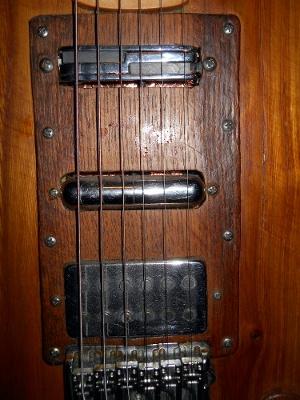

I still need to tidy up the electrics of the Vinocaster (the current switch setup is prety lousy), but aside from that to all intents and purposes I'm considering it finished.
So what have I learnt? Well, for starters that it is possible for someone with only basic woodworking skills to have success with a project like this. However it took a lot of time and effort, and (mostly because I did a lot of fiddling with pickups) worked out costing a similar amount to a fairly good quality commercial guitar. Very satisfying though. Result. It's a lovely instrument and is now my main guitar.
On balance, I'll claim there were none. Basing the design on the Strat was a good idea (see ergonomics below), it simplified decisions considerably. I should perhaps have followed through with the Strat pattern to the extent of using that pattern for the pickguard/electrics setup, but I had assumed that I'd wind up using very custom controls, whereas in reality I'm probably going to revert to something fairly close to the Strat style.
Ok, first lesson learned here was that my expectation of what was tonally possible on a single guitar wasn't well aligned to reality. What I was initially aiming for was a setup that could produce the sound of any solid-body guitar : Fender Strat/Tele, Gibson LP, Gretsch etc. This was wrong minded. I was also a little misled by the claims of pickup manufacturers, for example that single-coil sized humbucker mounted in a Strat-style guitar could make it sound like a '59 Gibson LP. Nope.
What was true was that choice of pickup did have a big influence on the sound, but it wasn't altogether clear-cut, there are other big factors (biggest of all probably the simple position of the pickup). Worth noting I reckon is that once you get beyond really cheap pickups (e.g. the stock ones in a Squier Strat), there doesn't seem much correlation between price and quality.
A while after putting the Vinocaster together I bought a cheap LP model (middle of Thomann's Chinese/own-brand Harley Benton range). This had pretty awful pickups, which I swapped for some StewMac 'Golden Age' ones. The result, while obviously not in the same league as a Gibson, does have all the tonal characterics usually ascribed to them: warmth etc. At this point I realised that trying to cover every sound on one guitar was a non-starter. But although it can't cover some of the sounds the LP produces, I did end up with a seriously versatile instrument - it does have more range than either my Strat or LP taken individually.
The pickups I've settled on are as follows:

The TV Jones on its own gives a good a twang, Gretsch-like and getting into Telecaster territory (with a little treble boost, see the Vinotone). The lipstick tube on its own is vaguely Strat-like, though perhaps a little less transparent. It's excellent for producing a wash of sound, nice psychedelics though a chorus. In constrast the Alumitone is extremely transparent - I read somewhere about them even producing acoustic-like tones. I wouldn't go that far, but on it's own it's really clean (I'm guessing the current-driven design means the inductance of the coil(s) has less influence on frequency response than usual). Given minimal external effects (overdrive/distortion and tone) it can go from being Strat-like through a mellow jazz sound to metal. The impedances of these three appear to be balanced enough that they also work well in combination - even Strat-like quack is available.
But I only arrived at these choices after a lot of trial and error. My Squier Strat is now tricked out with the Seymour Duncans I tried at first (they cost a lot more than the original guitar). They are good, but all kinda compromises: the Duckbucker (a humbucker that's meant to quack like a single coil) isn't as clean as a single coil, the Lil '59 as noted above isn't as 'fat' as a traditional humbucker. The rails-style Seymour Duncan (I forget which model) is pretty good for mellow or fuzzbox-oriented sounds, but the Alumitone is more versatile.
If I was to build another guitar, and wasn't following a standard layout (I just followed roughly the Strat pattern here) I think it would be useful to spend some time playing with the pickup positions (I just followed roughly the Strat pattern here). I can't see how to avoid the trial and error element of pickup selection, but I reckon I'd start lower down the price range rather than assuming the expensive ones would necessarily be better.
The Vinocaster weighs in at a fraction over 10lbs/4.5kg compared to a typical Strat around 8lbs and a Les Paul around 11lbs. Personally I prefer a bit of weight, the (cheapo) Strat I've got feels kinda unbalanced, floppy in comparison. I reckon I stumbled on rather a good design, the Strat-style shaping make it more ergonomic than an LP, but it has similar heft. I can only guess at the influence on tone, but I think the added solidity at least compensates for the use of a wood not normally chosen for tone (chestnut), it's natural sustain is better than either my Strat or LP.
I know from so many other projects that it makes sense to take time over things, and although overall the Vinocaster took ages, I did rush some bits. A particular annoyance is that I used grey epoxy to glue the body together, I should have waited until I'd got some clear, if you look closely there are visible lines. But aesthetics weren't high on my priorities and I hadn't expected the wood in the end result to be quite so attractive.
I should also have taken a lot more time over the finish, especially sanding, sanding, sanding. It's really tedious but I now think it would have been worthwhile. On first pass I gave the surface a coat of olio pagliarino (straw oil?), which is fairly inert stuff. This wasn't necessarily a bad move, as it penetrated pretty well and would seal the wood against moisture. After that had soaked in I polished up with beeswax. At the time I hadn't been able to source linseed oil, but then I came across some. I decided it was worth another pass over the finish so used a cabinet scraper to remove the beeswax (and a bit more of the not-quite sanded-enough wood) and gave it a couple of coats of linseed oil, again polishing up with beeswax later. This did improve the surface considerably, though it's still not quite as good as it would have been had I sanded more... Hey ho.
Thanks to Dave Pawson, Rob Michael and Alex Lapidus for prompting me to write this update.